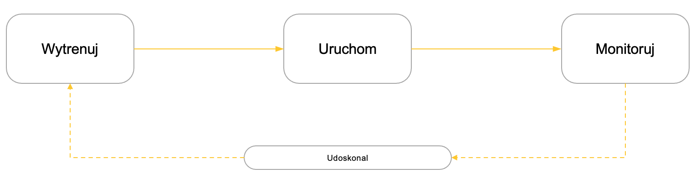

Rozdział 4 Monitoring modeli
Po udostępnieniu model uczenia maszynowego jest wykorzystywany w środowisku produkcyjnym. Jakość jego predykcji (lub innych zadań, do których został wytrenowany) może być oceniana poprzez porównanie zgodności prognoz z rzeczywistością. Przykładowo, model prognozujący popyt na wybrany produkt w danym horyzoncie czasowym (np. tygodnia) może być oceniony po upływie tego czasu poprzez porównanie predykcji z faktycznym popytem. Etap ten nazywamy ewaluacją. Artefakty procesu ewaluacji to najczęściej miary efektów (ang. scoring) oraz zbiory doświadczeń (zawierające najczęściej stempel czasu, prognozę oraz stan faktyczne).
Modele uczenia maszynowego nie są doskonałe. Ich jakość zależy od typu problemu (klasyfikacja? regresja? predykcja szeregu czasowego? segmentacja?) i jest mierzona w procesie trenowania (przed akceptacją do wdrożenia produkcyjnego).
Często okazuje się, że początkowo bardzo dobra jakość modelu, z czasem istotnie się obniża. Innymi słowy, model początkowo świetnie prognozujący np. popyt na dany produkt po pewnym czasie zaczyna popełniać coraz więcej błędów.
Przyczyn takiej sytuacji jest kilka. Po pierwsze, może wystąpić zmiana w zmiennej prognozowanej. Przykładowo, w przypadku sprzedaży inflacja może w naturalny sposób podnieść poziom wszystkich cen, czego efektem może być podniesie wolumenu sprzedaży - model wytrenowany na danych historycznych będzie w takiej sytuacji prognozował niższe wartości niż realne.
Po drugie, mogą zmienić się zmienne objaśniające (cechy). Użytkownicy mogą zmieniać urządzenia, z których korzystają, na rynku mogą pojawiać się produkty nowego typu, etc. Przykładowo, model prognozujący popyt na mieszkania wytrenowany na danych, w których były dostępne jedynie budynki 3-4 piętrowe przestaną działać w sytuacji, gdy w mieście pojawią się 10-piętrowe wieżowce.
Kolejną przyczyną deaktualizacji modeli mogą być zmiany w relacjach pomiędzy cechami a zmiennymi prognozowanymi. W naturalny sposób mogą zmieniać się gusta klientów, pojawiać nowe trendy zakupowe, nowe kampanie marketingowe, konkurencja, substytuty produktów czy też po prostu zmiany globalne.

Wszystkie te czynniki wpływają na stopniowe pogarszanie jakości modeli stosowanych produkcyjnie, co jest motywacją dla wdrożenia procesów monintoringu i udoskonalania modeli.
Przydatne źródła
- Podstawowe wprowadzenie do przyczyn, skutków i metod zapobiegania dryfowi modeli można znaleźć tutaj.
- Bardzo dobre wprowadzenie w różne strategie postępowania w przypadku detekcji dryfu modelu znajduje się tutaj.
- Interesujący przegląd narzędzi wspomagających monitoring modeli (uwaga: stworzony przez jednego z dostawców tego typu narzędzi) dostępny jest tutaj.
4.1 Monitoring modeli - wprowadzenie
Ocena jakości modelu jest kluczowym elementem procesu trenowania: decyzję o przekazaniu modelu do wdrożenia produkcyjnego podejmujemy kierując się w dużej mierze wartością odpowiedniej miary tej jakości.
Metody ewaluacji

Sposób oceny jakości zależy przede wszystkim od typu problemu, jaki ma rozwiązać model. Miary ewaluacji będą różne dla problemów klasyfikacji, regresji, prognozy szeregu czasowego czy segmentacji.
Doświadczenia
Podczas korzystania z modelu w środowisku predykcyjnym, możemy z czasem gromadzić doświadczenia: porównywać prognozę modelu z tym, co wydarzyło się faktycznie, i gromadzić te porównania w osobnym repozytorium.
Doświadczenia gromadzimy w miarę upływu czasu, i dopiero po pewnym czasie możemy ocenić, na ile dobrze nasz model sprawdza się w nowej (innej niż podczas treningu) rzeczywistości. W tym celu wykorzystujemy właśnie repozytoria doświadczeń.
Predykcję realizować możemy realizować:
- w ciągły sposób (przetwarzanie strumieniowe, predykcja on-line)
- … lub w pakietach (przetwarzanie pakietowe, predykcja off-line))
W efekcie, dane na potrzeby ewaluacji możemy więc pozyskiwać:
rekord po rekordzie < predykcja on-line
w pakietach < predykcja off-line.
Potok wnioskowania
Sekwencję działań, których celem jest monitoring jakości modelu, można uporządkować w tzw. potok wnioskowania (ang. inference pipeline). W dużym uproszczeniu, sprowadza się on do cyklicznego gromadzenia doświadczeń w dedykowanym repozytorium (bazie danych czy zwykłym pliku), obliczania miar jakości modelu i gromadzenia tych miar w kolejnym repozytorium.
Na potrzeby kolejnych rozważań uprościmy notację, i pełny proces wnioskowania oznaczać będziemy symbolem jednego bloku IF.
Schemat powyżej ilustruje kolejne etapy wnioskowania produkcyjnego, których rezultatem są nie tylko predykcje, ale też kolejne doświadczenia (gromadzone w repozytorium oznaczonym symbolem T) oraz szereg czasowy miar jakości modelu (gromadzony w repozytorium oznaczonym symbolem S).
Jeśli miara jakości przekroczy pewien założony przez nas próg, system może wygenerować sygnał dotrenowania.
Podsumowanie
Jak widać, cały proces uczenia maszynowego jest sekwencją wnioskowań raz na jakiś czas przerywanych sygnałem dotrenowania, który uruchamia proces udoskonalania modelu (treningu). Kluczową decyzją w tym przepływie jest określenie reguł generowania sygnału dotrenowania.
Przydatne źródła
Interesującą platformą dedykowaną do monitoringu modeli jest https://arize.com/. Warto przeanalizować dostępne tam materiały, w szczególności https://arize.com/ml-observability/.
4.2 Demo: monitoring modelu
Uwaga: komplet wersji demonstracyjnych, ćwiczeń i rozwiązań oraz rekomendacje dotyczące środowiska uruchomieniowego znajdziesz tutaj:
https://github.com/wodecki/ASI_2022
Cel
Celem naszego programu jest ewaluacja już wytrenowanego modelu na kolejnych partiach danych i zapis metryk jakości do osobnego pliku.
W module wykorzystamy:
- wytrenowany w poprzednim ćwiczeniu model regresji
- syntetyczne zbiory danych, zbliżone do zbioru treningowego, niemniej na tyle różne, by zidentyfikować potencjalny dryf modelu.
Stworzony dzięki temu program będziemy mogli później wykorzystać jako komponent procesu identyfikacji dryfu modelu.
Lista kontrolna
Skrypt, który stworzymy, będzie realizował następujące zadania:
-
Wczytanie wytrenowanego modelu
model/model_1.0.pkl -
Wczytanie danych testowych:
-
wybór paczki danych testowych:
batch_now zakresie od1do6 - wczytanie odpowiedniej paczki
-
wybór paczki danych testowych:
- Wygenerowanie predykcji modelu
-
Obliczenie miar jakości:
- RMSE
- r2
-
Zapisanie w pliku
evaluation/model_eval.csv:- stempla czasowego
- nr paczki danych
- wartości miary RMSE
- wartości miary r2
-
UWAGA:
- jeśli pliku nie istnieje: utworzenie go
- w przeciwnym przypadku: uzupełnienie pliku (dodanie aktualnych rekordów).
Architektura
Artefakty
- Wejście
- Model:
model/model_1.0.pkl - Pliki testowe:
data/batch_n.csv, znw zakresie od1do6
- Model:
- Wyjście
- Plik ewaluacyjny:
evaluation/model_eval.csv
- Plik ewaluacyjny:
Komponenty
Jeden program 1. Evaluate.py realizujący zadania z listy kontrolnej.
Decyzje
Projektując to rozwiązanie, musimy podjąć następujące decyzje:
- Wybór miary jakości modelu
- RMSE
- R2
4.3 Ćwiczenie: monitoring modelu
Uwaga: komplet wersji demonstracyjnych, ćwiczeń i rozwiązań oraz rekomendacje dotyczące środowiska uruchomieniowego znajdziesz tutaj:
https://github.com/wodecki/ASI_2022
Sterowanie parametrami uruchomieniowymi z linii komendą jest powszechną, dobrą praktyką we wdrożeniach produkcyjnych. Jest nie tylko wygodne i bezpieczne (brak konieczności zmiany skryptu przy zmianie parametrów), ale zapewnia też lepszą kontrolę procesu oraz umożliwia wykorzystanie pakietów dedykowanych do skanowania hiperparametrów (takich jak https://hydra.cc/ czy https://optuna.org/)
Zmodyfikuj moduł demonstracyjny tak, by nazwy artefaktów wczytywane były do pliku z linii komend, a nie wprowadzane bezpośrednio w skrypcie Python.
Wykorzystaj w tym celu bibliotekę argparse.
Tak zmodyfikowany plik będziesz mogła/mógł wykorzystać potem w implementacji pełnego potoku monitoringu modelu i detekcji dryfu.
Lista kontrolna
Zmodyfikowany skrypt umożliwia przekazanie z linii komend następujących parametrów:
-
batch_no: nr paczki danych testowych z folderudata\ -
model_path: ścieżka do pliku z wytrenowanym modelem.
Przydatne źródła
- Przystępne, ale kompleksowe wprowadzenie do biblioteki
argparseznajdziesz tutaj. - Hydra.cc: biblioteka umożliwiająca zaawansowane sterowanie parametrami uruchomieniowymi.
- Optuna.org: biblioteka oferująca inteligentne metody skanowania optymalizacji hiperparametrów w uczeniu maszynowym.
4.4 Detekcja dryfu modelu
Jak już wspominaliśmy wcześniej, dryf modelu może być spowodowany w szczególności:
- Zmianą zmiennej prognozowanej (np. w przypadku sprzedaży: inflacją)
- Zmianą zmiennych objąśniających (np. cech klientów, charakterystyk produktów, etc.)
- Zmianą relacji pomiędzy zmiennych prognozowanymi a cechami (np. zmiana koniunktury, wprowadzenie substytów, nowe kampanie marketingowe, etc.).
Poniżej przedstawimy najczęściej spotykane metody identyfikacji dryfu modelu i generowania sygnału dotrenowania.
Metoda 1. Twardy próg
Najprostszą metodą identyfikacji dryfu modelu jest:
- ustalenie pewnego “twardego” progu: minimalnego akceptowalnego poziom jakości modelu (np. maksymalny dopuszczalny poziom błędu RMSE)
- uruchamienie sygnału dotrenowania w momencie, gdy miara jakości modelu przekroczy ten próg.
Metoda 2. Test porównawczy
Kolejna metoda, tzw. test porównawczy, uruchamia sygnał w momencie, gdy nowa miara jakości modelu jest gorsza niż wszystkie poprzednie wartości. Na rysunku miara oznaczona czerwoną kropką jest większa niż wszystkie pozostałe, co jest źródłem “alarmu”.
Wadą tego rozwiązania jest często jego “nadwrażliwość”: sygnał dotrenowania uruchamiany jest zbyt często i niepotrzebnie.
Metoda 3. Test istotności parametrycznej
Rozwiązaniem problemu “nadwrażliwości” testu porównawczego jest test istotności parametrycznej.
W tym podejściu sygnał dotrenowania uruchamiamy w sytuacji, gdy aktualna wartość miary jakości jest gorsza (mniejsza lub większa) o dwa odchylenia standardowe od średniej poprzednich wartości. Wybór mniejsza/większa zależy od tego, czy wyższa wartość miary świadczy o poprawie, czy też zmniejszeniu jakości modelu (por. rysunek powyżej).
Procedura postępowania jest w tym przypadku następująca:
Oblicz średnią poprzednich wartości miary
Oblicz odchylenie standardowe poprzednich wartości miary
Sprawdź, czy aktualna wartość miary jest gorsza (mniejsza lub większa) niż średnia +/- 2*odchylenie standardowe.
Problematyczne w tym podejściu mogą być sytuacje, gdy nasze odczyty pomiarów jakości:
- nie układają się krzywą dzwonową
- mają wartości odstające.
Metoda 4. Testy nieparametryczne (detekcja wartości odstających)
W przypadku testów nieparametrycznych sygnał dotrenowania uruchamiamy w sytuacji, gdy aktualna wartość miary jakości jest zinterpretowana jako wartość odstająca i jest gorsza od poprzednich wartości.
Procedura postępowania jest w tym podejściu następująca:
- Dla zbioru poprzednich miar oblicz
- Q1 (pierwszy kwartyl)
- Q3 (trzeci kwartyl)
- Odległość międzykwartylową: IQR = Q3 - Q1
- Ustal granice wartości ”normalnych”:
- Dolna granica: Q1 – 1.5 IQR
- Górna granica: Q3 + 1.5 IQR
- Dla nowej miary jakości modelu sprawdź, czy mieści się ona w dopuszczalnych granicach: Q1 – 1.5 IQR < miara < Q3 + 1.5*IQR
- Wygeneruj sygnał dotrenowania w sytuacji, gdy:
- nowa wartość miary jest poza tymi granicami i
- jest gorsza niż pozostałe (mniejsza lub większa, w zależności od typu miary).
Dla przypomnienia, pierwszy kwartyl to wartość miary, od której 25% wszystkich miar w zbiorze jest mniejsza.
Metoda 5. Testy hipotez statystycznych
Często stosowaną metodą identyfikacji dryfu modelu jest sformułowanie i weryfikacja hipotezy, że rozkład jednego zbioru danych różni się od rozkładu innego zbioru. Podejście to może służyć zarówno do identyfikacji zmiany jakości modelu, jak tzw. dryfu danych prognozowanych.
Do weryfikacji takich hipotez można wykorzystać testy hipotez statystycznych. W uczeniu maszynowym szczególnie popularne są test Kolmogorowa-Smirnowa oraz test Chi-squared. Osoby zainteresowane zachęcam do lektury artykułów z sekcji Przydatne źródła.
Przydatne źródła
- Bardzo dobrą prezentację różnych metod identyfikacji dryfu modelu można znaleźć tutaj.
- Wprowadzenie do testowania hipotez dostępne jest w tej lekcji na Khan Academy.
- Wykorzystanie testów hipotez statystycznych w identyfikacji dryfu modelu w przystępny sposób opisane jest tutaj.
4.5 Demo: detekcja dryfu
Uwaga: komplet wersji demonstracyjnych, ćwiczeń i rozwiązań oraz rekomendacje dotyczące środowiska uruchomieniowego znajdziesz tutaj:
https://github.com/wodecki/ASI_2022
Cel
Celem naszego programu jest detekcja dryfu w oparciu o wyniki ewaluacji z poprzedniego ćwiczenia, zarejestrowane w pliku evaluation/model_eval.csv.
Stworzony dzięki temu program będziemy mogli później wykorzystać jako komponent pełnego potoku MLOps.
Lista kontrolna
Skrypt, który stworzymy, będzie realizował następujące zadania:
-
Wczytanie wyników ewaluacji z pliku
evaluation/model_eval.csv. -
Przygotowanie tych danych do obliczenia testów: “twardego” i parametrycznego
Identyfikacja ostatniego odczytu
Lista logów miar jakości: RMSE i r2
-
Przeprowadzenie testów i wydruk ich wyników na ekranie:
-
test “twardy”:
- Dla RMSE rozpoznajemy dryf (przypisujemy wartość TRUE), jeśli nowe RMSE jest większe od średniej wszystkich poprzednich RMSE
- Dla r2 identyfikujemy dryf (przypisujemy wartość TRUE), jeśli nowe r2 jest mniejsze od średniej wszystkich poprzednich r2
-
test parametryczny:
- Dla RMSE rozpoznajemy dryf (przypisujemy wartość TRUE), jeśli nowe RMSE jest większe od średniej wszystkich poprzednich RMSE + 2*odchylenie standardowe (wszystkich poprzednich RMSE)
- Dla r2 identyfikujemy dryf (przypisujemy wartość TRUE), jeśli nowe r2 jest mniejsze od średniej wszystkich poprzednich r2 - 2*odchylenie standardowe (wszystkich poprzednich r2).
-
test “twardy”:
Architektura
Artefakty
- Wejście
- Pliku z ewaluacjami:
evaluation/model_eval.csv.
- Pliku z ewaluacjami:
- Wyjście
- wydruk wyników testów na ekranie.
Komponenty
Jeden program 1.detect_model_drift.py realizujący zadania z listy kontrolnej.
4.6 Ćwiczenia: detekcja dryfu i dotrenowanie
4.6.1 Ćwiczenie: detekcja dryfu
Uwaga: komplet wersji demonstracyjnych, ćwiczeń i rozwiązań oraz rekomendacje dotyczące środowiska uruchomieniowego znajdziesz tutaj:
https://github.com/wodecki/ASI_2022
W pliku 1.detect_model_drift.py dodaj funkcjonalności umożliwiające:
-
Przeprowadzenie testu nieparametrycznego (IQR) i wydruk jego wyniku na ekranie
- Dla RMSE rozpoznajemy dryf (przypisujemy wartość TRUE), jeśli nowe RMSE jest większe od trzeciego kwartylu RMSE + 1.5*IQR
- Dla r2 identyfikujemy dryf (przypisujemy wartość TRUE), jeśli nowe r2 jest mniejsze od pierwszego kwartylu r2 - 1.5*IQR
- Wygenerowanie sygnału dotrenowania w sytuacji, gdy co najmniej jeden z testów dał wynik pozytywny
-
Zapis sygnału dryfu w przypadku jego zastąpienia do pliku
evaluation/model_drift.csv- Jeśli ten plik jeszcze nie istnieje: skrypt powinien go stworzyć
- Jeśli ten plik już istnieje: powinien dodać do niego nowe rekordy
-
Zapisywany rekord powinien zawierać następujące pola:
- Stempel czasu
- Wersja modelu
- Uzasadnienie wygenerowania sygnału dryfu: 6 kolumn (3 testy po dwa parametry) z wartościami TRUE (test pozytywny: sygnał dryfu) lub FALSE (test negatywny: brak sygnału dryfu)
-
Przykładowy kształt pliku:

4.6.2 Ćwiczenie: uruchomienie dotrenowania
Uwaga: komplet wersji demonstracyjnych, ćwiczeń i rozwiązań oraz rekomendacje dotyczące środowiska uruchomieniowego znajdziesz tutaj:
https://github.com/wodecki/ASI_2022
To proste ćwiczenie zostawiliśmy na koniec: pozwoli one zamknąć pętlę MLOps.
Na końcu pliku 1.detect_model_drift.py wykorzystaj bibliotekę Python subprocess do uruchomienia pliku 2. train_model.py w przypadku wystąpienia dryfu.
4.7 Monitoring modeli - podsumowanie
Kluczowe etapy w cyklu życia modelu to trenowanie i wykorzystanie produkcyjne (inferencja).
Modele nie są doskonałe nie tylko na końcu procesu trenowania: z czasem mogą się one też deaktualizować.
Najważniejsze przyczyny dryfu modelu to:
Zmiana w zmiennej prognozowanej
Zmiana w zmiennych objaśniających (cechach)
Zmiany w relacjach cech i zmiennych prognozowanych.
Rozwiązaniem jest ciągły monitoring modeli.
Najbardziej popularne metody detekcji dryfu to:
Test „twardy” (porównawczy)
Test istotności parametrycznej
Test nieparametryczny (identyfikacja wartości odstających IQR).
Detekcja dryfu jest sygnałem konieczności dotrenowania modelu.
W efekcie, cykl życia modelu jest sekwencją procesów trenowania i wnioskowania produkcyjnego - aż do momentu wycofania go z użytkowania.